Devoir de mémoire et convivialité
Préserver la mémoire et renforcer les liens d'amitié
Bienvenue sur le site officiel de l'Association Souvenir et Amitié.
Créée en février 2010, l'association œuvre pour préserver le devoir de mémoire et favoriser les rencontres entre les habitants.
Nous participons aux cérémonies patriotiques, notamment les 8 mai et 11 novembre, en tenue d'époque et avec des véhicules historiques.
Nous organisons des manifestations et activités permettant aux habitants de se rencontrer, d'échanger et de partager des moments conviviaux.
Rejoignez notre équipe pour participer aux commémorations et aux animations locales.
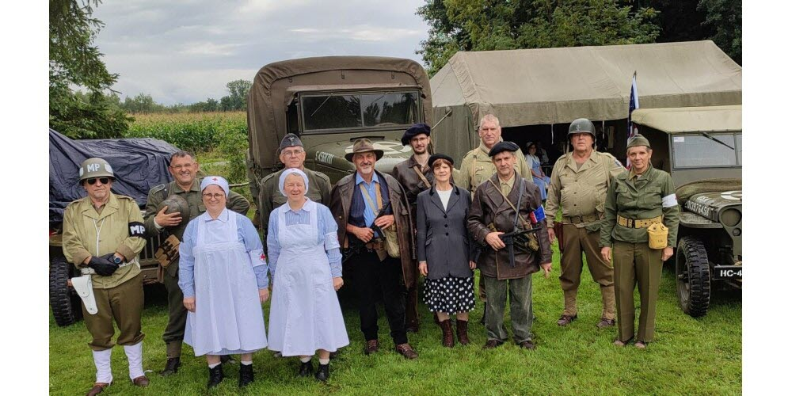
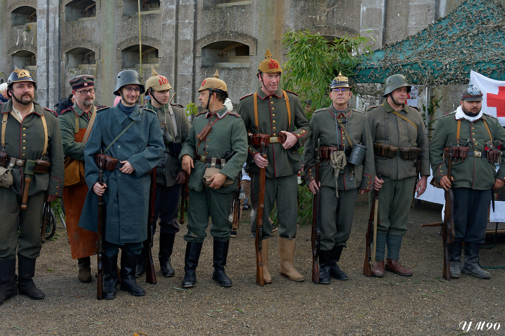
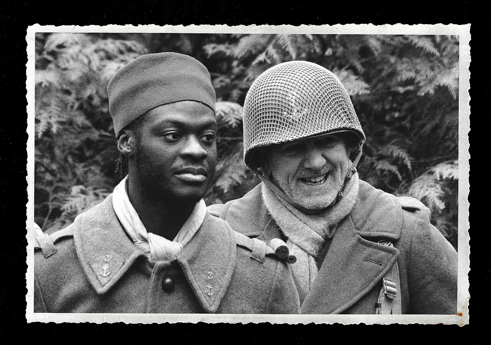
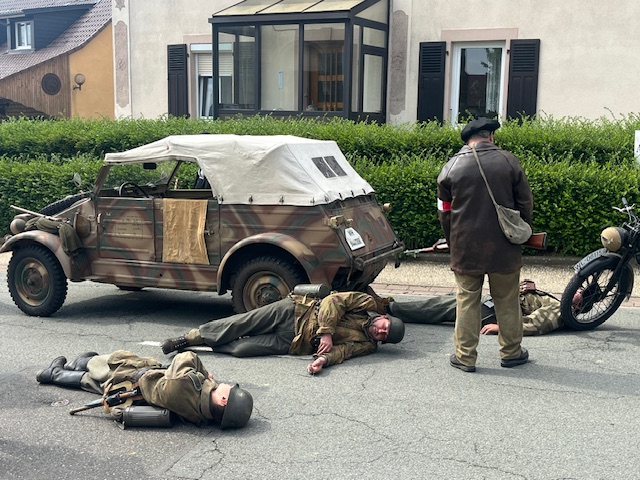
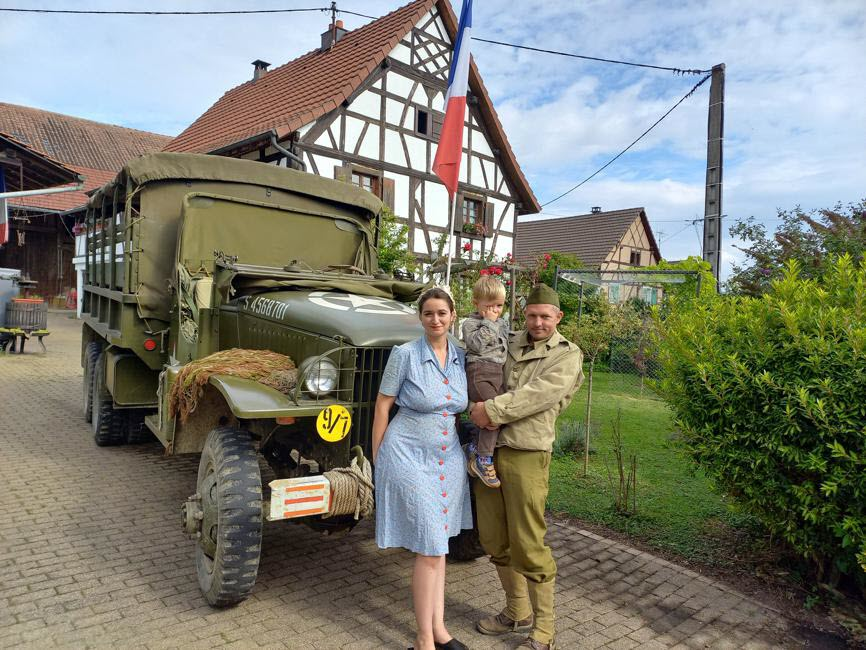
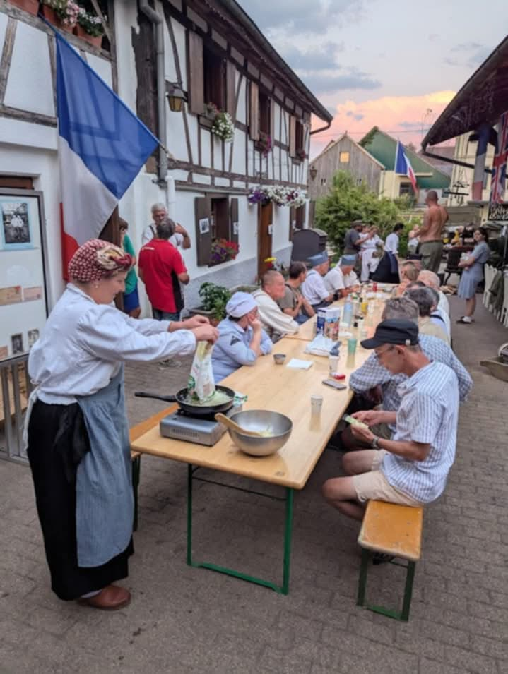
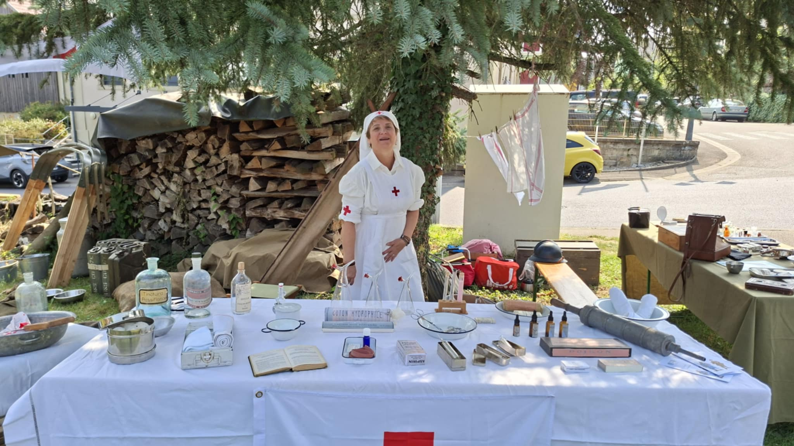
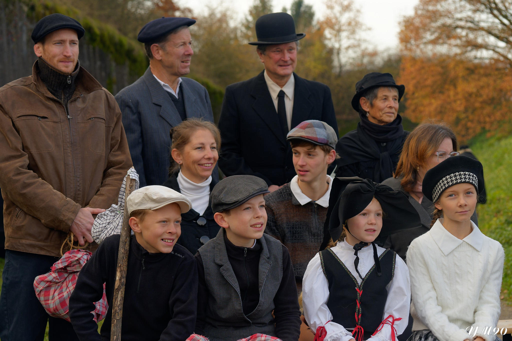
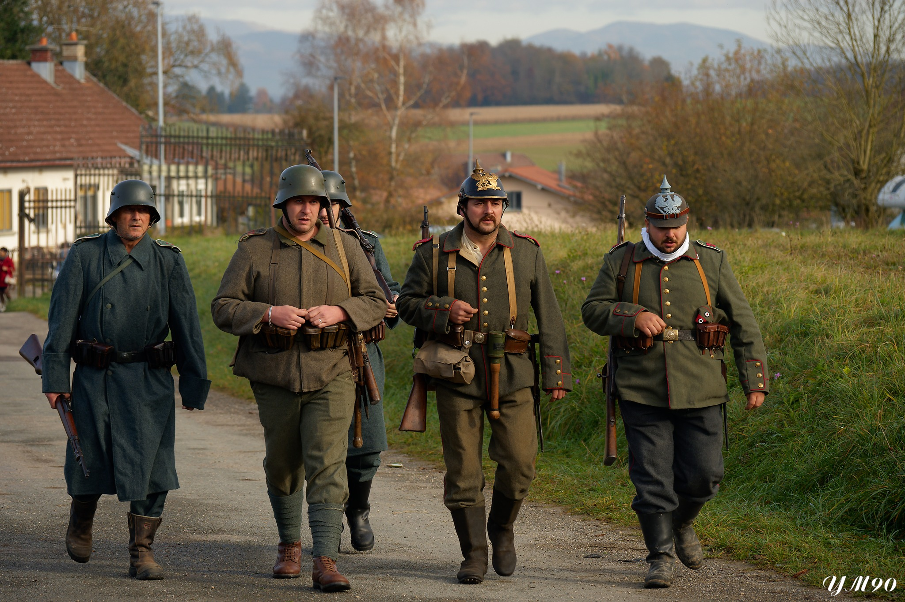
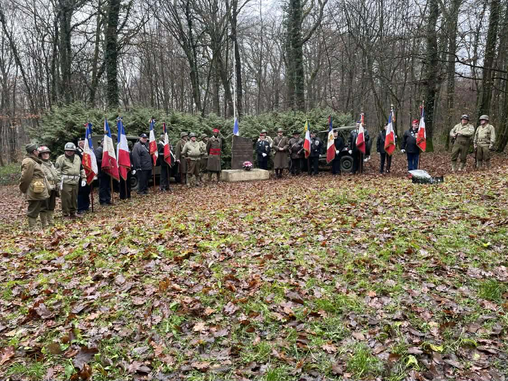
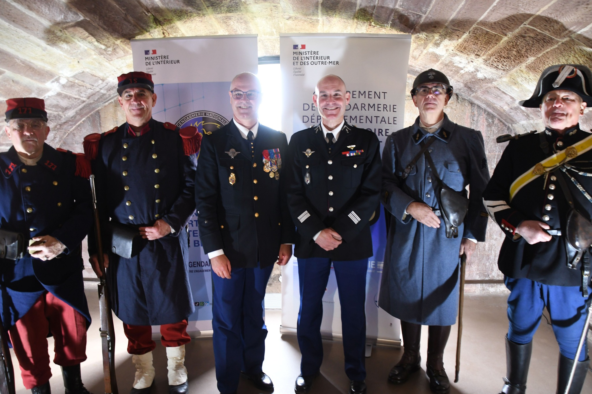
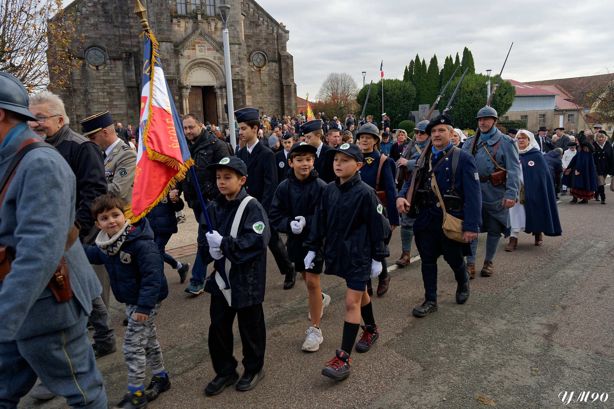
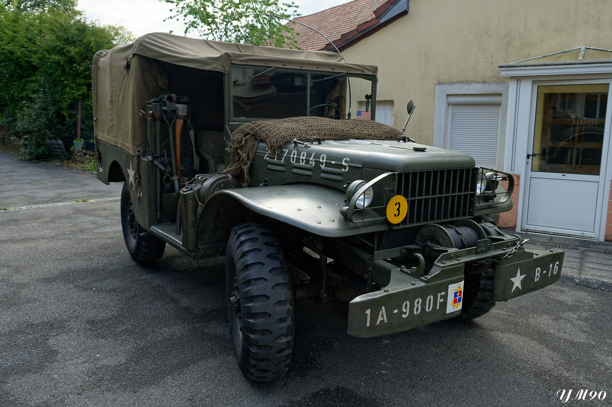
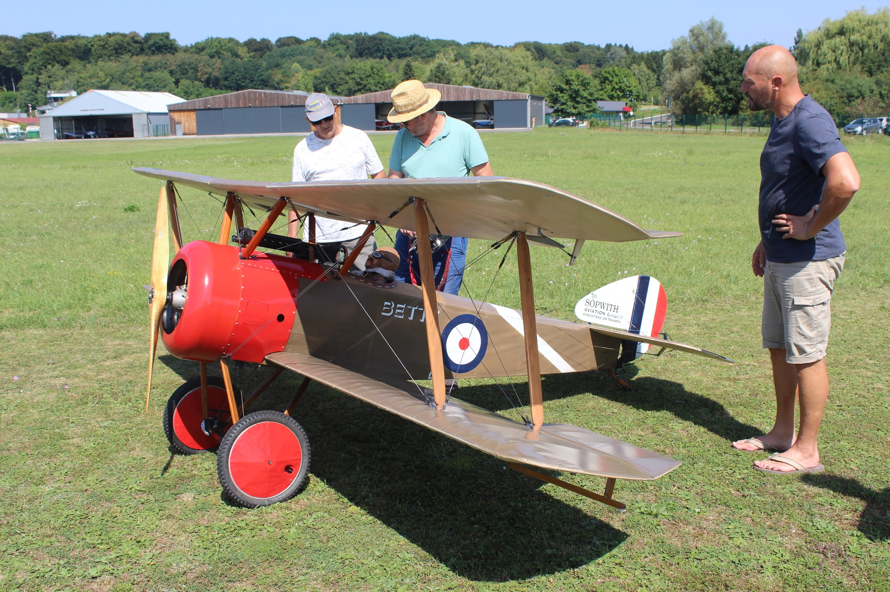
Photos complémentaires disponibles sur Wikimedia Commons .
Président : Philippe MATTIN
6 rue de la Liberté
90400 Meroux-Moval